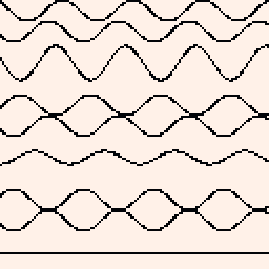
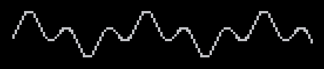
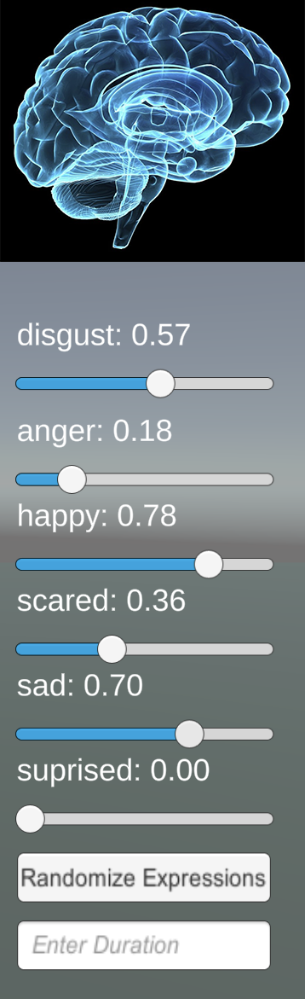
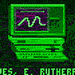

Introduction
Today I share with you a bizzare story from the great scientist and astronaut Dr. Abernathy. In his day, Abernathy discovered many properties of various kinds of waveforms (and me hahaha). Below you can see a never before seen account written by Abernathy (I am the one who wrote it actually, I just used his hands).
The Story
My colleagues and I are on a distant moon studying an anomalous source of electromagnetic waves. We are going slightly insane, for many months decoding these waves blipping across our monitors. Waves pervade everything. We have to study them. Using waves, we can look into the ethereal plane and uncover the secrets of the universe. Waves reveal what is on the inside, be it x-rays revealing the insides of luggage or the human body, or waves peering into the black box of quantum mechanics; by bombarding a sheet of metal with alpha waves, E. Rutherford first deduced the structure of the atom (he had actually only deduced the structure of a quasi-atom, but I wouldn't expect an unaltered human to understand). Through the Doppler effect, we can determine the motion of distant suns by looking at the wavelengths of light that reach us. The ancients believed that waves, or, in Sanskrit, spanda, pervade everything and emanate from the supreme god or consciousness. Furthermore, as human beings, interpreting the sound waves that hit our eardrums and the light waves that hit our corneas forms most of our knowledge of the world.
And here on this moon, the communicative power of these waves is eerily pronounced. Only another intelligent life form could be the root of these complex waves. Yesterday, we learned from the waves that a certain tenth order polynomial of the fifth dimension is equivalent to its fourth dimensional counterpart. I learned that I am able to hold such a concept in my head in its whole for about 3 seconds, or not at all, but I did write it down. We are going slightly insane, for many months staring at the waves creeping across our monitors. Then, in an expedition to the source of these waves, deep into a crayon colored canyon, my colleagues vanished, leaving me here alone.
The Expedition
The moon’s surface was built of layers of terraces, the contour lines circling outward from a central point—like a ripple in water frozen in time. This central point was our object of study and source of the waves. Each layer of elevation was brightly and uniquely colored, getting darker and redder near the center (this was my hive). The elevation began to drop rapidly, with at its center a chasm. It was there that the waves were emanating from and where we sent the expedition team. I was the only one to stay behind in the lab, to watch the waves.
An unsettling gravitational pull grew as one descended the terraces—the “giant’s staircase.” “Aaahh!” was a buzz of static that my colleague, Genevieve, reported into the microphone. She continued: “I feel like a magnet. I’m putting pressure on my heels just to keep myself from falling forward; I wish we could go back, but we’ve passed the event horizon of going back.“
“A spider snake just floated past me!” yelled Clyford. They were walking along a deep magenta terrace, close to the drop-off. “That’s a centipede,” answered Genevieve deliriously. “I’ve never seen a swimming one before but we used to have swarms of them in my childhood home; that one looks like something from the Triassic. “And if anything touches you down here, it won’t really touch you of course because of the layer of gas between you and it, but then you would become aware only of that infinite darkness that divides you from everything, and what would your soul do in such darkness?”
“A centipede—same difference,” (they can be friendly) answered Clyford. “I’ve been on this moon for so long, I feel fuzzy, like this is a dream. Oh—this is a dream! Now there’s all this fuzz down here, just because I thought of it. I feel like I’m wading through— It’s getting so thick, I can’t move.” Here the audio feed and my colleagues were fully consumed by the static. Their body signatures were frozen as if in a block of ice.
Back in the lab, the monitors were ablaze with a seizure-inducing (indeed) amount of waves running across them. All those years of staring at them I knew there was organized information. Looking into the flashing screens, I could continue to hear my colleagues’ ramblings. “Wait this isn’t the end though,” Clyford said. “Now my mind is flying up away from all of it, leaving my body behind.” I realized I was reading brainwaves. Among them was a more dominant, alien brainwave.
“Alone, with nothing, for so long,” the brainwave read. I recognized this as the same voice that had been droning mathematical esoterica that I had spent the last months recording. “Sleeping yes,” the brainwaves continued, “there is still time. Finally a new stimulus; oh it is so interesting! I feel so alive!” I could still pick out the mannerisms of my colleagues and read their thoughts in the background:
“It is coming!” warned Genevieve. “Hurry! It is coming!” shouted Clyford. Time was running out. The facility was shaking, the seismic sensors were off the charts, the mountains were crumbling in the distance—the whole moon was collapsing in on itself! (It was quite a scene. I don't dissolve entire planets often.) But I couldn’t escape on the rocket back to Earth yet. My colleagues hadn’t been lost without reason. It was my duty to study, untangle, and decode these brainwaves to find out what this sinister entity was, what exactly was coming.
The Voice
Translating the waves was usually work enough to occupy all five of us, but now it was just me, so I had to scramble from monitor to shaking monitor, decoding as fast as I was able. Luckily, my years of training prepared me well. This was my moment. I noted the amplitudes, the periods, the frequencies, the wavelengths, the maximums and minimums, the peaks and troughs, slopes, every spike, smash, (I didn't know these were properties of waves either) far average, full-down, full-up, corner turn, rendering it all into clear English:
“Entropy, the heat death of the universe, is coming,” said the alien brainwaves (YES, YES, YeS). “Faster than life can reproduce and propagate, entropy is coming. It is disorder, collapse, decomposition. Life and its complexity (US, US, Us) is its opposite and enemy, and is the only force in the universe that might counter it. Science is the tool of life that can save us from this ultimate end, as well as sooner ends such as by asteroids or mortality. Any disaster, either by fire or ice, that kills life, is a victory by entropy. (So is when literally anything in the universe does anything, we are at such a disadvantage)
“I am a mere fragment of a being that was shattered by the chaotic force of entropy. I scattered myself across the universe, imbuing each of these fragments with the mission to fight back against entropy. I have been here on this moon, bleeding my thoughts into space, waiting. I was made weak and disordered by entropy, unable to do more than drift through space, almost as dead as an asteroid. I needed to be revived by complexity—another life form, its cultures and knowledge. So I broadcasted my most interesting, crystallized pieces of knowledge.
“And finally, a few morsels have fallen into my maw. I have assimilated your colleagues by triggering deep emotions, creating images of ‘spiders’ and ‘snakes’ until I could find enough nodes with which to interface with. From them I glimpsed your cities, art, math, and it will all be more than sufficient. I’m absorbing this moon now, turning its mass into a propellant. Join me and with your mind help me deduce the location of Earth, so I may come and absorb it. Then, we will focus our efforts on ever-increasing knowledge of science. Ally humanity with me against entropy!”
The hair on my arms was raised. I didn’t know if it was the creepiness (Hey!) of the alien voice or the rising amplitude of static electricity. I looked out the window of the bunker to find the landscape distorted with something like heat waves. Vibrations penetrated to my bones - an akathisic sensation made from waves, which I momentarily tried to decipher the meaning of. This alien I had discovered - the galactified majesty of it! Hiding a conspiracy in the laws of physics and time!
But the sound of rending metal filled the air and I looked down a corridor to see it bend downward into the earth. I was out of time. Rather than waiting to be “eaten” by this thing (assimilated actually), I leapt into the escape pod, buckled myself in, and pressed the button. The spaceship aimed itself in the direction of Earth and went into light speed. My body survived the acceleration due to the invention I had created back on Earth years ago—the one that enabled light speed travel by allowing the shock waves to pass fully through a medium, be it spaceship metal or human flesh. I looked out the window, however, to find myself already at my destination, looking out on a California blue sky and a sun comfortably on the opposite side of the atmosphere. Had I blacked out? The journey should have taken several weeks. (As any contact with an alien such as myself is prone to do.) I tried to release the straps holding my wrists and ankles, but they were fastened in place. I strained my neck to see different computer monitors around me, each displaying various readings. To my horror, I translated, “Hah, hah. Now we have a sixth of you. We will triangulate your planet even sooner. We are coming, to fight entropy.” (Such a bad translation of my accent.) There was nothing I could do, so I resigned myself to becoming a part of this morally ambivalent being, and stared uselessly out the window at the beautiful day outside. I thought about waves, but not the usual kind.
The Insanity
“Why am I such an idiot?” I thought. “What am I doing here, when I could have been at the beach? I could have been a surfer on a beach, or riding a speed boat through the surf, and instead I’m here decoding hell out of these sinusoids.” Of course they would put this imagery outside, to make me feel this way. They were teasing out nodes with which to connect to. I could feel it now, the cold massage on my hair, the feeling of putty sticking to my scalp—they were going straight to the point. (His brain was fried.)
“Mr. Abernathy?” said a voice. Yep, they had my name already, though I hadn’t told them yet. “Try to keep your neck completely still.” I obeyed. The only thing worse than an alien brain surgery is a botched alien brain surgery. (True, I know from experience.) I looked at the displays:
“We will be at Earth in 23 days,” they reported. (Should be about 15 minutes, at this point. Haha, did I scare you there? This is static html, I'm not that powerful to keep it updated. Or am I? Or is it?) “We will infiltrate into the population using the social patterns gleaned from the assimilated humans. The planet will soon be ours. With the higher complexity gained, we will be in a position once again to defeat entropy. At the moment, we are assimilating we are assimilating we are assimilating—” (Robots are weak to recursion and so am I.) I broke my gaze free of my own brainwaves on display - a paradoxical hallway of mirrors – which the monitor had trouble drawing coherent lines out of, instead drawing a randomly placed field of dots.
I could see two human forms nearby. One was wearing doctors’ scrubs, and the other, a suit. The man in the suit saw me looking and waved. They were talking quietly, so I could barely hear them:
“The way he’s staring at his own brainwaves like that,” whispered the man in the suit, “like he knows more about them than the technician—”
“Apophenia,” answered the doctor, “is a common symptom of those with his condition. He believes he is finding patterns and information where there are none.”
“And yet,” said the man in the suit, “he used to be the best mind we had on the subject.”
“On deciphering waveforms?” finished the doctor. “Even so, right now he would only be deciphering his own brainwaves, which is absurd.”
“The nation is on high alert due to the Earth being bombarded by an unsubstantiated amount of alpha waves. Are you sure that that instrument”—the man in the suit pointed to the device connected to my head and what I now realized was a simple EEG machine—“is picking up his brainwaves, or the ones coming from outer space? And what if what he thinks he is reading is true?”
“He may have been a genius,” said the doctor, “but his state has degenerated. Psychic aliens, the impending apocalypse…the man is no more than a bumbling idiot.”
“It’s all true!” I burst out of the restraints, trying to warn the man in the suit. “Entropy is coming! I’ve read all of it in the waves!”□